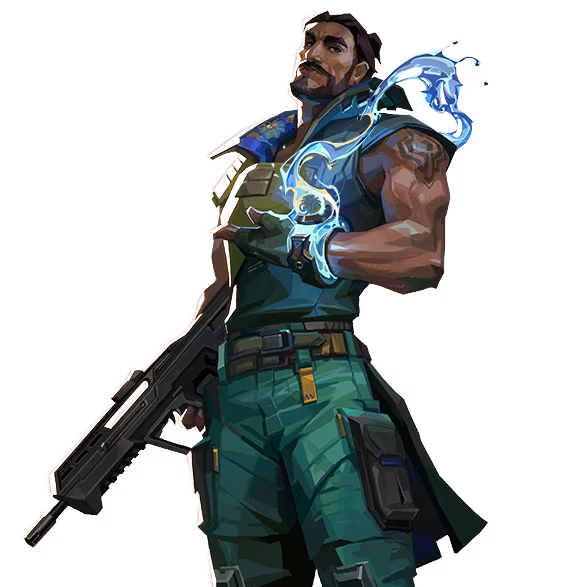

ハーバー

国籍: インド
ロール: コントローラー
ハーバーは水を操る能力を持つエージェントで、チームのために視界を遮り、敵の動きを制限することが得意です。彼のアビリティは多目的に活用でき、攻守共に強力なサポートを提供します。
公式トレーラー
スキル
| スキル名 | 値段 | 所持上限 | 説明 |
|---|---|---|---|
| ハイタイド (C) | 200 | 1個 | 長い水の壁を作り出し、敵の視界を遮る。壁は自由に曲げることができ、戦術的に活用可能。 |
| コーブ (Q) | 150 | 2個 | 水のドームを生成し、その内部では弾丸を防ぐバリアを展開する。防御的に使用することで、味方を守ることができる。 |
| カスケード (E) | 無料 | 1個 | 波を前方に送り出し、接触した敵にスロウ効果を与える。波は壁を貫通し、広範囲に影響を与える。 |
| レコニング (X) - アルティメット | - | 1個 | 構えを取り、「発射」で遺物の力を解放して、地面に間欠泉のエリアを展開する。エリア内にいる敵プレイヤーは間欠泉から繰り返し攻撃を受け、攻撃に当たったプレイヤーはスタン状態になる。 |
立ち回りとおすすめマップ
攻めの立ち回り
ハーバーのハイタイドを使ってサイトへのエントリーを支援します。コーブを使って安全に設置ポイントに到達し、カスケードで敵を牽制しながら進行することが効果的です。
守りの立ち回り
守りでは、ハイタイドを使って敵の視界を遮り、カスケードで進行を遅らせます。コーブを使って味方を守りながら、安全に防衛を行うことが重要です。
レコニングの活用
レコニングはラウンドの終盤に使用して、敵の位置を明らかにしつつダメージを与えることができます。敵の動きを制限し、味方に有利な状況を作り出すことが可能です。
カスケードのタイミング
攻撃時と防衛時で、カスケードの使用タイミングを見極めることが重要です。敵のラッシュを遅らせるために使うか、逆にラッシュを支援するために使うかの判断が求められます。